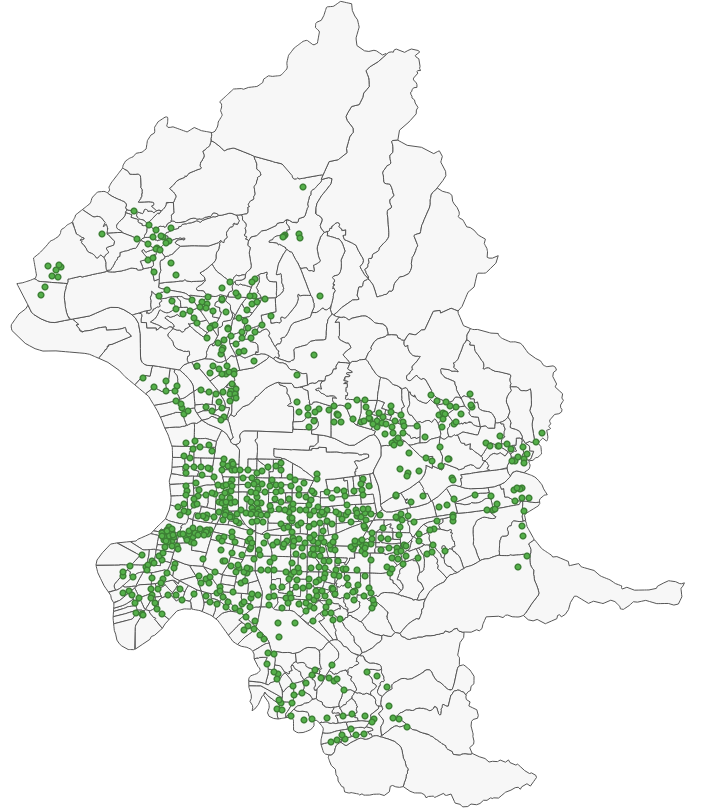
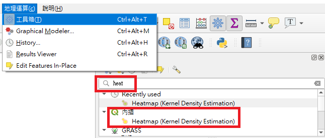
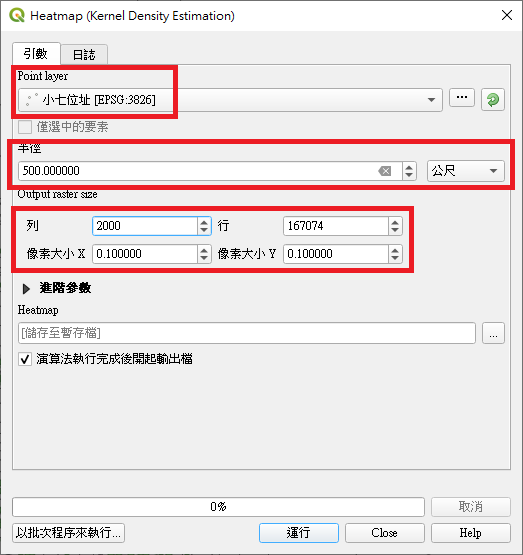
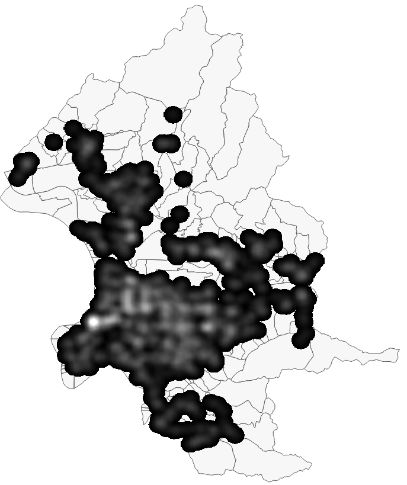
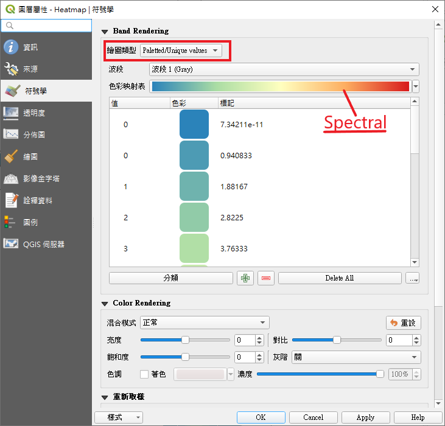
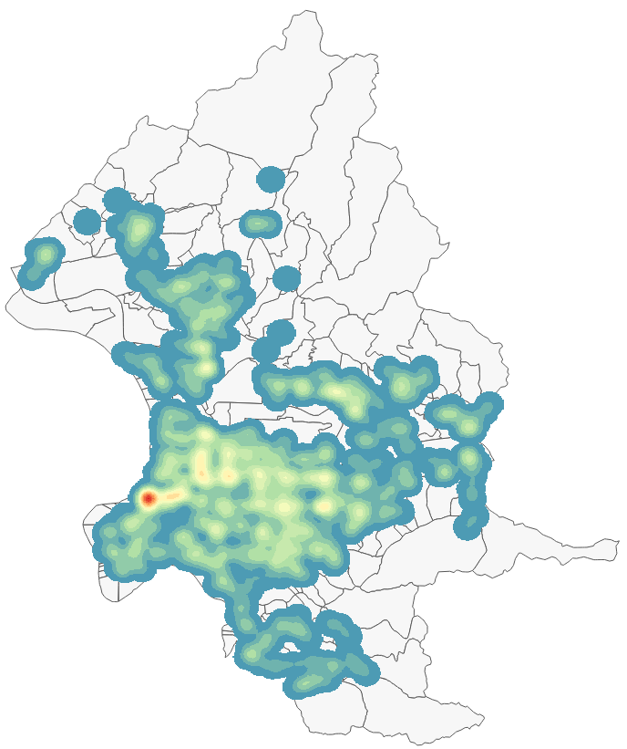

熱區圖(Heatmap)是空間分析研究中重要工具，運用在犯罪研究中可以幫助決策者了解城市犯罪熱點的分佈，以利警力佈署及資源運用。在QGIS中熱區圖的建立通常利用Kernel Density Estimation方法對空間目標點位進行運算以產生所需要的熱區圖。QGIS的地理算工具提供Heatmap製作。啟動Heatmap運作，先由功能列點選地理運算，在地理運算工具列搜尋Heatmap，在搜尋結果列表中點選「Heatmap (Kernel Density Estimation)」，系統回應一個操作選單介面，其中基本需要填寫的參數項目標包含點位圖層(Point layer)及半徑欄位，須注意半徑的單位，如公尺。另適當地填入列、行、像素大小X，Y參數，這些參數將影響輸出圖形檔的大小。進階參數部分在此先暫不討論。產生出的熱區圖還需要對輸出顯示選擇適當的色彩進行調整。
先來實際操作體驗一下，這裡我們使用的點位資料為之前台北市小七便利商店的位置所產生的kml檔。
操作步驟
開啟QGIS，載入台北市的村里界圖做為底圖，調整適當顯示顏色。
載入711門市.kml檔案，調整適當顯示顏色。
注意：將調整好的圖層另層成shapefile，並選擇座標系統為TWD97/121，中文編碼為utf-8。

功能列點選「地理運算」下的「工具箱」，在地理運算工具列搜尋「Heatmap」，在搜尋結果列表中點選「Heatmap (Kernel Density Estimation」

在熱區圖參數界面中輸入參數
Point layer： 點選小七位址的點位圖層
半徑：500.00 單位：公尺
列：2000 (行參數會自行調整)
運行計算完成產生Heapmap網格圖檔。

調整Heatmap輸出顯示。
開啟Heatmap屬性設定
選擇「符號學」
繪圖類型：Paletted/Unique values
色彩映射表：Spectral
完成台北市小七便利商店位置的熱區圖
